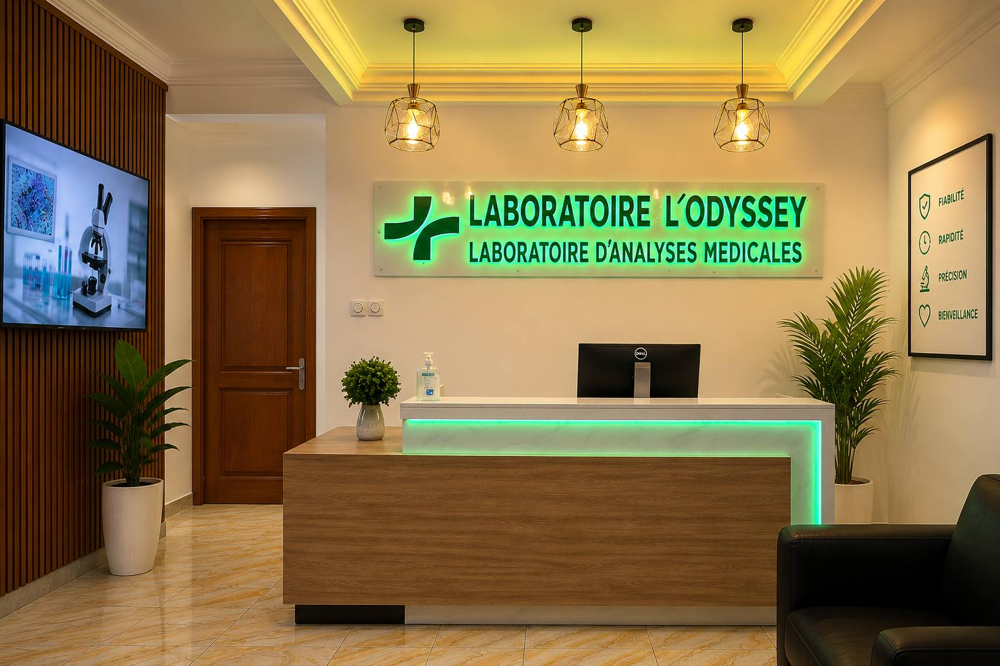

À propos du laboratoire
La précision médicale, avec une attention profondément humaine.
Nous créons un parcours rassurant où chaque patient est accueilli, informé et accompagné avec respect.

Notre engagement
Des examens fiables dans un cadre pensé pour vous rassurer.
Le Laboratoire L'Odyssey accompagne les patients de Douala avec des analyses médicales, des consultations et des examens d'échographie réalisés dans un environnement moderne.
Notre approche réunit exigence technique, disponibilité et confidentialité afin que vous puissiez comprendre chaque étape de votre prise en charge.
- Clarté
Des explications simples avant et après chaque examen. - Fiabilité
Des procédures rigoureuses et des équipements adaptés. - Bienveillance
Une équipe disponible, respectueuse et attentive.


Une équipe disponible tous les jours.
Le laboratoire vous accueille du lundi au dimanche, de 07h à 20h, à Ndogbong Bifaga.